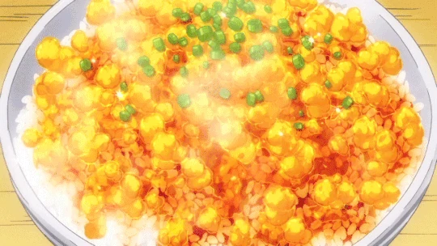
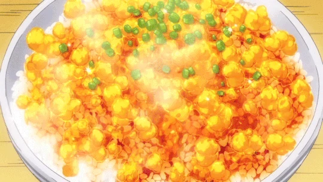

Transforming Furikake Gohan
 

Description
An original take on the classical Furikake Gohan, the Yukihira style uses eggs coated by a golden coating using chilled chicken broth to create a golden jewel from the simplest ingredients.
Ingredients
Main Dish
- Beef Sirloin (Supermarket discount)
- Lots of Onion
- Garlic (mix with onion)
- Pepper
- Salt
- Potato Starch
- Rice (Donburi Bowl)
- Umeboshi Paste
- Pickled Plum
Sauce
- Red Wine
- Soy Sauce
- Butter
How to Cook
- Chop the onions finely.
- Remove the tendons from the beef and beat it with a meat tenderizer until as flat as possible.
- Cover meat on both sides with the chopped onion and leave for 30 minutes or more. Remove the onion and add salt and pepper.
- Cook the steak to your preference(most would prefer medium-rare). Remove from heat and melt 1 tablespoon of butter in a frying pan and fry the onion used for the beef until it changes color. Adjust the flavor with salt and pepper, then move the onion to the steak.
- Melt the remaining butter in the frying pan and fry the sides of the meat before taking it out.
Making the Sauce:
- Add red wine to the frying pan used for the beef to deglaze it. Boil down the wine while scraping off the meat juice.
- Add soy sauce and mix with everything. Adjust seasonings to personal preferences.
- Thicken with dissolved potato starch.
Put rice mixed with Umeboshi paste (pickled plum) in the donburi bowl. Place the beef on top and add plenty of sauce. Top with the finely chopped, cooked onions.